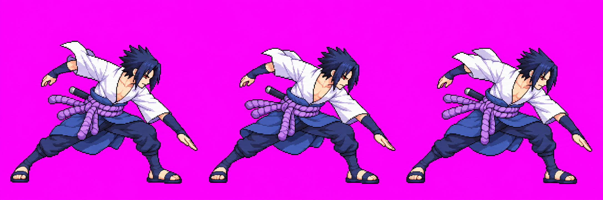
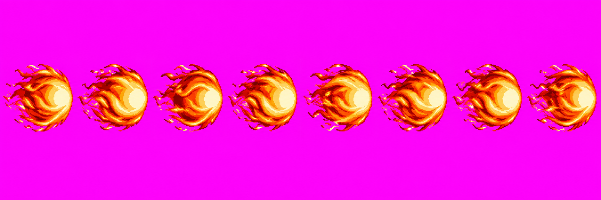
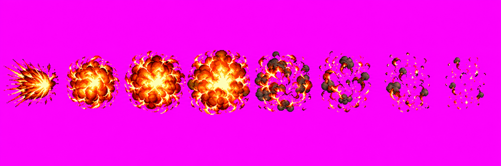
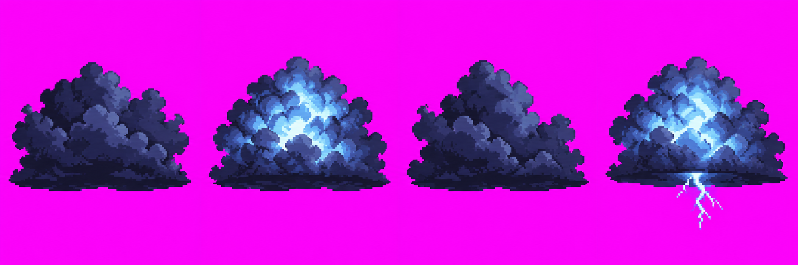
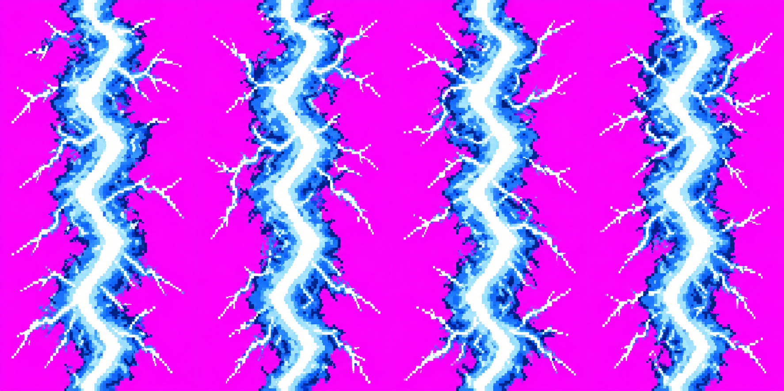
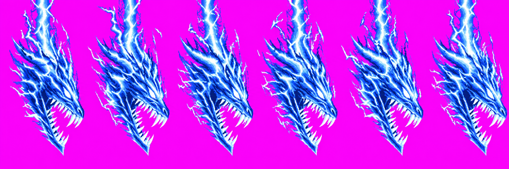
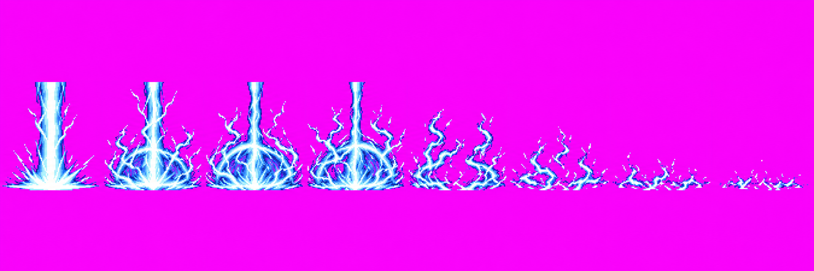

beamFire v08 · approved

The user approved beamFire v08 and HD effects A8–A13 via Claude relay skills #19. Generated art is shown at source dimensions against magenta; no raw pixels were edited. Approval is visual; Claude owns HD packing and game integration.
Technical holds: beamFire v08 used 3/3 calls. Earlier candidate pack at bodyHeight 198 failed strict scale: auto-head fit clamped at 0.75 and left head 1.15× the idle probe; at matched body the drawn head read 1.16. User approved a halfway size: Claude sets bodyHeight for head ~8% over idle and low-lunge body ~7% under. No accepted quantized atlas/body sheet/final Astra audit is recorded yet. `kirinStrike` reaching the cell top is as briefed, per relay #19. Claude owns scale application, HD integration and in-game checks.







Full prompts, attempts and SHA-256 provenance: batch 3 provenance. Review rows and manifest keep the exact version/status history.